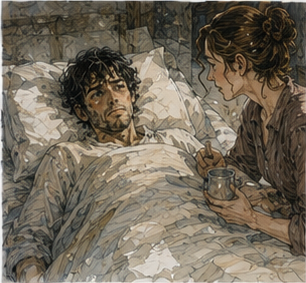

My left foot itched. Specifically between the second and third toes. This was impossible. It remained itchy. I opened my eyes. Morning. Probably. The infirmary window had gone from black to gray. Somebody had moved the lamp. My mouth tasted like old copper and poppy. My left foot itched. I tried to rub one toe against the other. Nothing. The itch sharpened.
“Fuck.”
A woman at the next bed said, “Morning.”

I turned. Curtain half open. Older woman. Bandage around her head. I had no idea who she was.
“Sorry.”
“For what?”
“Swearing.”
She stared.
“Why?”
Good question. I scratched the blanket where my foot should have been. Worse. The motion made the real end of my leg hurt. Two different problems. One body. Excellent. A healer came in carrying a basin. Not Sera. Young man. Freckles. He looked too cheerful.
“Morning.”
“No.”
He set the basin down.
“How's pain?”
“Yes.”
“Where?”
I looked at him. He waited. Fine.
“Incision. Deep ache below knee. Burning foot that doesn't exist. Itch between toes that don't exist. Right hip sore. Back sore. Head thick. Mouth dry.”
“Anything sharp?”
“When I move.”
“Nausea?”
“Some.”
“Dizzy?”
“Not lying down.”
“Good.”
I pointed.
“No.”
He smiled. Terrible profession.
“I'm Nerin.”
“Greg.”
“I know.”
Of course.
“Need to check the dressing before breakfast.”
“Where's Sera?”
“Rounds.”
“Hessa?”
“Not here.”
Good. Bad. Normal. Nerin pulled the blanket down. I looked. Bandage. Still there. Still short. No surprise regeneration overnight. I had not expected one. I checked anyway. Nerin noticed. Did not comment. Better healer than cheerful face suggested. He touched above the dressing.
“Warm?”
“Yes.”
“Here?”
“Yes.”
“Pain?”
“Yes.”
“Different pain?”
“Pressure.”
He nodded.
“Any wetness?”
“I haven't looked.”
“We have.”
“Blood?”
“Some drainage. Expected.”
“Color?”
He looked at me.
“Red-brown.”
“Smell?”
“No.”
“Fever?”
“No.”
“Temperature?”
He told me. A number. Finally. I liked him more. He gave me water. I drank too fast. Nausea. Stopped.
“Slow.”
“I know.”
“Apparently.”
I hated him again. Then he said, “Need the pot?”
“No.”
My bladder immediately informed me I was lying.
“No,” I repeated.
Nerin looked at me. I looked at him. This became a contest. He won because biology had authority.
“Fuck.”
“Pot?”
“Yes.”
There were indignities I remembered from being old. Not old-old. Not helpless. But injured. Poisoned. Once with a spine wound that made standing a terrible idea for three days. People had helped. I had forgotten the details. Conveniently. My mind had preserved battles and discarded chamber pots. Coward. Nerin brought it.
“I can do it.”
“Good.”
He adjusted the bed. I reached. Movement pulled through my abdomen and left thigh. The missing lower leg tried to brace. Could not. My balance shifted even while lying down. Ridiculous.
“I said I can.”
“I didn't say anything.”
“You were thinking.”
“I was watching you nearly spill it before you started.”
“Professional optimism.”
I managed. Barely. He took the pot. I stared at the ceiling.
“Congratulations,” he said.
“Die.”
“Breakfast soon.”
“I hope yours is poisoned.”
The woman in the next bed laughed. Traitor. Breakfast was porridge. I ate four bites. Then six. Then stopped. My body wanted food and rejected the concept at the same time. Sera arrived while I was negotiating with spoon seven. She looked exactly as she had yesterday. Unfair.
“Morning.”
“Everyone keeps saying that.”
“It remains true.”
She washed her hands.
“Pain?”
I gave the list. She nodded.
“Phantom sensation expected.”
“Useful.”
“Not particularly.”
“Does it predict anything?”
“No.”
“Duration?”
“Variable.”
“How variable?”
“Days to years.”
Bad unit.
“Permanent?”
“Possible.”
“Frequency?”
“Variable.”
“Severity?”
“Variable.”
“Excellent field.”
“Medicine is full of satisfying precision.”
I liked her. She checked my pulse. Eyes. Abdomen. Then the dressing.
“We're changing this.”
“Now?”
“Yes.”
“Why?”
“Because I enjoy your company.”
Hessa entered.
“Bad reason.”
Sera looked at her.
“You're late.”
“I wasn't scheduled.”
I looked at Hessa.
“You were scheduled in five days.”
“Yes.”
“Calendar says so.”
“I have chosen to ignore your calendar.”
“Dangerous precedent.”
She set a small leather case on the table. Not magic equipment I recognized. Healing supplies. Sera said, “Ready?” No.
“Yes.”
They removed the outer bandage. Pain changed with every layer. Air. Pressure release. Pull. One place stuck. Sera wet it. Waited. Removed it slowly. Competent. I hated her. The residual limb looked worse than the bandage. Swollen. Bruised almost black along one side. Sutures. Open drainage section. No elegant stump. No future. Just damaged meat shaped into something survivable. My stomach turned.
I looked anyway.
“Color?”
Sera said, “You have eyes.”
“Is that good color?”
“Some is bruising. Some tissue we're watching.”
“Which?”
She pointed.
“Here concerns me less. Here more.”
A darker edge near the open section.
“How much more?”
“Enough to recheck.”
“Dead?”
“Not currently.”
“Marginal?”
“Yes.”
Hessa touched above the knee. Then near the wound. Magic. Warm. Careful. My head stayed clear. Hessa said, “Response is better than last night.” Sera nodded.
“Good.”
I almost pointed. Did not. Sera cleaned the wound. That hurt. Not cinematic pain. Not white. Detailed pain. Sharp here. Burn there. Pull. Deep ache. The phantom foot clenched in sympathy. I gripped the bed rail. Nerin appeared beside me. I had not seen him enter.
“Breathe.”
“I am.”
“Less stupidly.”
I breathed less stupidly. Sera said, “No obvious infection.”
“Day one.”
“Yes.”
“Too early.”
“Yes.”
“Fever?”
“No.”
“Drainage?”
“Acceptable.”
“Revision risk?”
“Still present.”
“How much?”
“Greg.”
“Fine.”
She dressed it again. By the end I was sweating. My hands shook. Body. Not channels. I knew. Hessa knew. Neither said it.
“Sit up later,” Sera said.
“I am sitting.”
“Edge of bed.”
Good.
“When?”
“After you rest.”
“Standing?”
“No.”
“Transfer?”
“Maybe chair.”
“Crutches?”
“No.”
“Why?”
“Fresh wound. Blood loss. medication. balance. I would like you not to fall onto yesterday.”
Reasonable. Annoying.
“What about tomorrow?”
“Tomorrow can defend itself.”
Hessa almost smiled. Sera left. I looked at Hessa.
“One cast yesterday.”
“I know.”
“Clean.”
“I know.”
“No channel symptoms.”
“I know.”
“You're not checking?”
“I just did.”
“Oh.”
“Quiet.”
Good. She packed her case.
“That's it?”
“For magic.”
“What about the leg?”
“Sera owns the leg.”
I stared. She stared back. Right. Boundaries. Fuck her.
“Do you know why the plate failed?”
“No.”
“Did anyone tell you?”
“No.”
“Can you ask?”
“Yes.”
“Will you?”
“No.”
I felt anger arrive. Fast.
“Why?”
“Because you can ask when you're able.”
“I am able.”
“You're lying in bed arguing about a chamber pot.”
Nerin had told her. Betrayal.
“That is unrelated.”
“It is evidence.”
“I need to know.”
“No. You want to know.”
“Same thing.”
“No.”
I hated her. Actual hate for perhaps three seconds.
“Get out.”
Hessa looked at me.
“Okay.”
That was worse. She picked up the case. I wanted her to argue. She did not. At the door she said, “I'll come back this afternoon.”
“I said get out.”
“Yes.”
She left. Good. My chest hurt. Not medically. Probably. I stared at the wall. The painted crack remained. I wanted to throw something. There was porridge. Bad weapon. I ate it instead. Angrily. This worked better than expected. I finished the bowl. Then slept for two hours. Maybe three.
When I woke, Alden was in the chair. He was holding the wooden horse. I stared. He stared.
“Why do you have that?”
“Jorren brought things.”
“He brought my horse?”
“He said you might want it.”
“I don't.”
Alden put it on the table.
“Good. It's ugly.”
“There's a lion.”
“What?”
“The seller has a lion.”
Alden's face did something. Then stopped.
“Okay.”
Wrong. Too careful. I hated that too.
“You can say it.”
“Say what?”
“Whatever you're not saying.”
He leaned back.
“I don't know what I'm not saying.”
“Bullshit.”
“Fine.”
He looked at the blanket. Then me.
“We were supposed to spar.”
“Next week.”
“Yes.”
“Still might.”
“No.”
Immediate. Good. I stared. Alden said, “Not next week.”
“I know.”
“Then don't make me lie.”
There he was.
“Could do seated.”
“No.”
“Why?”
“Because I don't want to.”
Fair. I looked at the horse.
“Who told you?”
“Guild.”
“What version?”
“Cart broke through yard plate. Frame shifted. Wheel crushed your leg. Surgeons took it.”
“Efficient.”
“Was it wrong?”
“No.”
He nodded.
Then:
“Did you fuck up?”
There. I looked at him.
“No.”
“You sure?”
“No.”
Alden waited. I hated him less.
“I called stop when the plate shifted.”
“Okay.”
“Everyone stopped.”
“Okay.”
“Plate had passed load test.”
“Okay.”
“We shifted weight back to hoist before reversing.”
“Okay.”
“Recovery made sense.”
“Okay.”
“Then it failed farther.”
Alden looked at the floor.
“That's shit.”
“Yes.”
“Did you do something after?”
“Moved.”
“Toward wheel?”
“No.”
“Then?”
“Wheel moved.”
“That's shit.”
“Yes.”
No philosophy. Excellent. He reached for the horse. Turned it over.
“Three copper?”
“Yes.”
“You got robbed.”
“Fuck you.”
“Lion's probably five.”
“I hate you.”
“Good.”
He set it down. Then stood. Already?
“How long are you staying?”
“I have training.”
Of course. He had a life.
“Go.”
“I was going.”
“Good.”
He paused.
“I'm coming back.”
“Why?”
“To annoy you.”
“Unnecessary.”
“Still.”
He left. I was glad. I was angry he left. Both. Fine. The chair came after lunch. This was humiliating. Not because chairs were humiliating. Because I knew how to sit in one. Apparently I did not know how to get into one. Nerin and another healer positioned it beside the bed. Arms. High back. Footrest for the right foot. Nothing on the left.
Visually offensive.
“I can transfer.”
Nerin said, “Show me.” I moved to the edge. Slow. Left thigh. Residual limb heavy and light at once. The phantom foot wanted the floor. My brain prepared to plant it. I stopped. There was no foot. I knew that. My body did not. I shifted weight right. Hands on bed. Push. The room tilted. Not much. Enough. Nerin's hand came to my ribs.
“I have it.”
“Sure.”
“I do.”
“Then why are you falling into me?”
“I am not.”
The other healer said, “You are.” Conspiracy. I got into the chair. Ugly. Clumsy. Successful. My heart was beating too fast. Sweat again. I had moved three feet. This was unacceptable. Nerin put the blanket over my lap.
“No.”
“What?”
“Don't.”
“You're cold.”
“I don't care.”
He left it. I removed it. Then became cold. I did not put it back. Principle. The chair changed the room. Lower. Different sightline. My left side felt exposed. The residual limb throbbed with gravity. After five minutes it hurt more. After ten, much more.
“Back.”
Nerin said, “You wanted chair.”
“I have updated.”
He helped me back. I hated the help. Needed it. Hated that more. Once in bed, the phantom foot felt like it was still on the floor. I could feel weight through a sole that did not exist. My brain was an idiot. Old Greg had known this happened. Knowledge did nothing. That was becoming repetitive. A clerk arrived midafternoon. Not Guild medical.
Antonius. No. Not Antonius. One of his runners. Young woman with a narrow ledger case. She stopped at the bed.
“Gregory?”
“Greg.”
“Vale office.”
“Which Vale?”
She blinked. Right. Iona Vale. Antonius Vale. No relation established.
“Antonius.”
“Good.”
Maybe. She opened the case.
“Your West Storehouse period is scheduled for next week.”
“I know.”
“Mr. Vale says it is canceled.”
“Canceled?”
“Deferred.”
“Debt?”
“Unchanged.”
“Fee?”
“None.”
“Interest?”
“Existing terms.”
Of course.
“Why no fee?”
She read.
“Unable to work due to documented Guild job injury.”
Antonius had a category. I laughed. Pain. Worth it.
“Tell him his compassion moves me.”
She looked at the ledger.
“Do you want that written?”
“No.”
“Good.”
I liked her.
“Anything else?”
“Yes.”
She handed me a folded note. I opened it.
GREG,
YOUR DEBT REMAINS ANNOYINGLY ALIVE.
SO DO YOU.
WE WILL RESCHEDULE WHEN HESSA OR THE INFIRMARY SAYS YOU CAN WORK.
DO NOT INTERPRET THIS AS FORGIVENESS.
A.V.
I read it twice.
“Asshole.”
The runner said, “Usually.”
“Does he know about the leg?”
“Yes.”
“What did he say?”
She considered.
“That isn't in the ledger.”
Good. She left. The debt remained. Strangely reassuring. I slept again. When I woke, Sera was arguing with Nerin about my blanket. Not medically. Actually the blanket.
“He keeps taking it off,” Nerin said.
“I am awake.”
“Good,” Sera said. “Then you can participate.”
“I don't want the blanket.”
“You were shivering.”
“I was not.”
Nerin said, “You were.” I looked at Sera.
“Is this in my chart?”
“It is now.”
Terrible. Sera checked the wound without removing the whole dressing. Pressure. Warmth. Drainage. Then my knee.
“Bend.”
I bent it. Not far. Swelling pulled.
“More.”
“No.”
“Pain or fear?”
I looked at her.
“Pain.”
“Good.”
“Everyone stop.”
She supported the residual limb with one hand and had me bend again. A little farther. The missing foot tried to move with it. Heel sliding backward. Toes flexing. Nothing there. My stomach tightened.
“Stop.”
She stopped immediately. Good. I breathed. Sera waited. No encouragement. Better.
“What are you checking?”
“Knee motion. Swelling. Whether positioning is already encouraging you to hold it bent.”
“Why?”
“Because a knee that never straightens becomes another problem.”
There. Future consequence arriving through a pillow. I looked down. The residual limb rested slightly bent because that hurt less.
“How straight?”
“Not forced today. But don't spend every hour curled.”
“Can I put something under the end?”
“No thick pillow under it for long periods.”
“Why?”
“Because you'll like it.”
“That is not medical.”
“And because comfort can teach the knee a position we don't want.”
Annoying.
“What position?”
“Straight enough to remain useful.”
Useful. Word hit strangely. Sera did not notice. Or did and ignored it. Good surgeon.
“When do I get out of bed?”
“You already did.”
“I mean independently.”
“Not today.”
“Tomorrow?”
“Maybe transfer with less help.”
“Standing?”
“Maybe with supervision if blood loss, wound, and balance permit.”
“On one leg.”
“Yes.”
I knew how to stand on one leg. I had done it thousands of times. That sentence was now stupid.
“Crutches?”
“Eventually.”
“Eventually is a bad unit.”
“Tomorrow is also not a promise.”
“What about stairs?”
Sera stared.
“What about them?”
“My room is upstairs.”
“How many?”
I did not know. I had climbed them every day.
“Enough.”
“Count them when you go home.”
“I'd prefer before.”
“Then send a friend.”
I pictured Sevren counting stairs. He would absolutely lose count on purpose.
“Discharge?”
“Not today.”
“I gathered.”
“Possibly several days if the wound behaves. Longer if it doesn't.”
“Behaves meaning?”
“No infection. Marginal tissue survives. Drainage decreases. No further debridement needed.”
“And if it doesn't?”
“We remove what becomes nonviable.”
“More leg?”
“Possibly a small revision. Possibly more if infection or tissue loss demands it.”
There. Not finished. The amputation had happened. The result was still not entirely settled.
“How likely?”
“No.”
“You people are cowards.”
“We're repetitive.”
She stood.
“Do not fall.”
“I wasn't planning to.”
“Excellent. A plan I support.”
She left. Nerin put the blanket over me. I let him. Temporary strategic concession. When Hessa returned, I did not apologize. Neither did she. She checked my channels. Then sat. Not therapy. Waiting. I said, “Alden asked if I fucked up.”
“What did you say?”
“No.”
“Was that true?”
“I don't know.”
“Good.”
I glared. She raised one eyebrow.
“Accurate answer.”
“I said no first.”
“Yes.”
“Then not sure.”
“Yes.”
“You're enjoying this.”
“No.”
Liar.
“Can I get the yard report?”
“When it's done.”
“When?”
“I don't know.”
“Who owns it?”
“Guild yard office, probably with Ressa's statement.”
“Probably?”
“I am not investigating your accident.”
There. Again. I looked at the bandage.
“What am I supposed to do?”
“Today?”
“Yes.”
“Recover.”
“That isn't a task.”
“It is.”
“No.”
“Your body disagrees.”
“Fuck my body.”
Hessa's expression changed. Not much. I regretted it. Not because it was false. Because the body had done nothing wrong. The wheel had. The plate. The yard. Me. Something.
“Fine,” I said.
Hessa said nothing.
“I didn't mean.”
“I know.”
“Don't.”
“I didn't.”
Good. She stood.
“Eat dinner.”
“Task?”
“Yes.”
“Finally.”
She left. Dinner was soup. Jorren's soup would have been better. Probably. I ate. Later, Sevren came. Alone. He did not bring food. Good. He brought my calendar. Bad. He held the page carefully.
“Jorren said you might want this.”
“No.”
“Okay.”
He started folding it.
“Don't.”
He stopped. I hated everything.
“Give it.”
He did. The page was slightly wrinkled from being removed from the mirror. Road Day One crossed out. Road Day Two crossed out. Drinks. Hessa. Blank. Alden. West Storehouse. All the stupid future. I stared. Sevren did not. He looked out the window.
“What day is it?”
I asked. He told me. I counted.
“Hessa was supposed to be five days after road.”
“Yes.”
“Alden next week.”
“Yes.”
“Storehouse after.”
“I don't know.”
“Right.”
He had no reason to know. I put the calendar on my lap.
“Do you have pencil?”
Sevren did. Courier. Of course. I crossed out HESSA MORNING. Not because it was canceled. Because Hessa had already been here twice. I stared at Alden. Did not cross it out. Not yet. West Storehouse. Canceled. Deferred. I wrote DEFERRED beside it. The letters were ugly. My hand was fine. The surface was bad. I almost rewrote them. Did not.
Sevren said, “Want me to put it back in your room?”
“No.”
“Keep it?”
“Yes.”
“Okay.”
He sat. After a while he said, “Lyssa says you owe her a drink.”
“For what?”
“She had to listen to Jorren explain the accident four times.”
“That's Jorren's debt.”
“I said that.”
“Good.”
He smiled. Then looked at me. Not the blanket. Me.
“Can I ask?”
“Depends.”
“Does it hurt?”
“Yes.”
“The part that's gone?”
“Yes.”
He frowned.
“That's fucked.”
“Yes.”
“Sorry.”
“Don't be.”
“Why?”
“I don't know.”
He nodded. Good answer. We sat. Sevren eventually told me about a courier who had dropped a sealed letter into a fish barrel and spent an hour negotiating with the fish seller. I asked whether the letter survived. Mostly. Important. He left before dark. The calendar stayed on the table beside the wooden horse. I looked at both. Secretary had failed catastrophically.
No warning. No contingency. Poor management. I almost laughed. Didn't. Night came slowly. Pain medication. Water. Pot again. Less humiliating the second time. Still humiliating. The woman in the next bed snored. My phantom toes curled. I tried to relax them. Nothing. I tried imagining them straight. Something changed. Maybe. Then the heel burned. No. Bad experiment. Stop. Hessa would be proud.
Fuck Hessa. I slept. Woke. Slept. Woke. At some point the room was black except for the hall lamp. I reached down without thinking to adjust my left ankle. My hand found air. Then blanket. Then the end of my leg. I froze. No drugs could make that normal. Not yet. Maybe never. I put my hand on my thigh instead. Warm.
Real. Mine. I did not calculate what came next. I did not design anything. I did not decide who I would become. I was tired. My leg hurt. My foot hurt. I needed to piss again. That was enough future for one night.